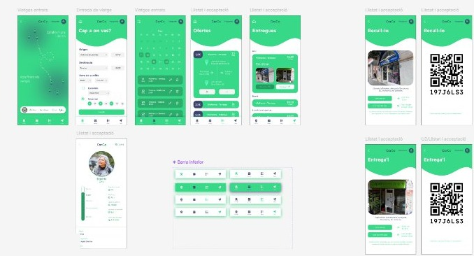
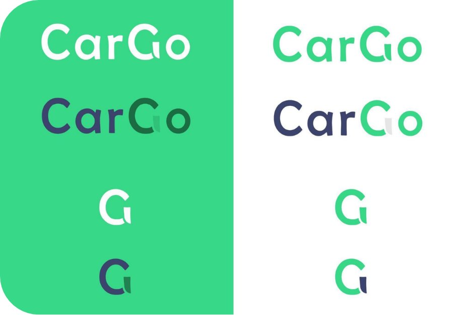

CarGo
Plataforma de logística col·laborativa que aprofita els desplaçaments quotidians per enviar paquets de forma més econòmica i sostenible.
Connectar persones que necessiten enviar un paquet amb conductors que ja fan el mateix trajecte cada dia.
En lloc d'afegir més furgonetes de repartiment, CarGo utilitza comerços de barri com a punts de recollida i entrega. Així es redueixen els costos d'enviament, s'eliminen els lliuraments fallits i es disminueix la petjada de CO₂.

Flux simple en 3 passos
L'usuari indica les dimensions del paquet i selecciona l'origen i destí en un mapa interactiu que suggereix transportistes compatibles al moment. La recepció es valida amb un codi QR segur als punts d'entrega locals, sota una identitat visual neta i immediata.

Defensat davant del tribunal de la UPC ESEIAAT el setembre de 2024 i guardonat amb Matrícula d'Honor per la seva viabilitat econòmica, simplicitat d'ús i impacte ambiental.